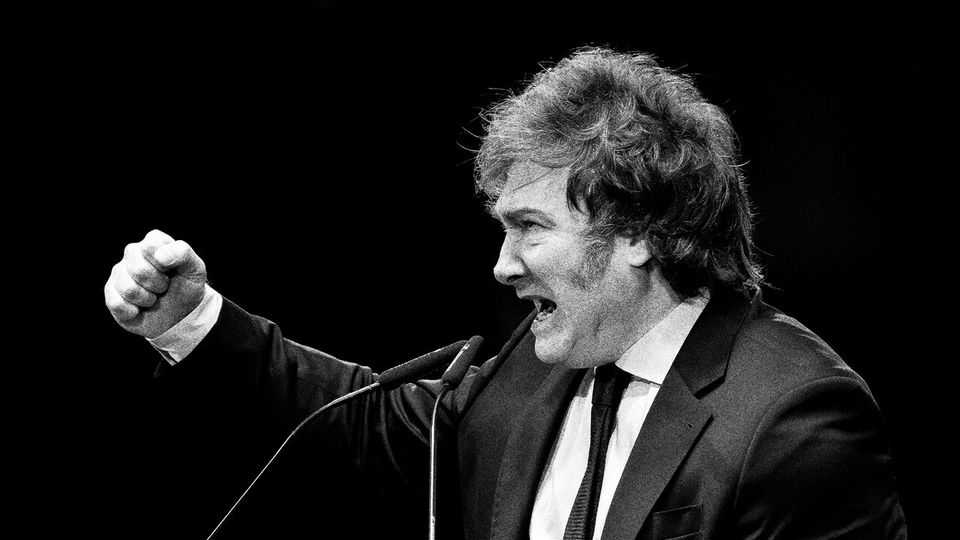

Argentina needs less shouting and more growth
Without it, Javier Milei’s remarkable liberal experiment could end next year

Sep 10th 2026
JAVIER MILEI swept to power three years ago as a libertarian tub-thumper, promising brutal cuts to public spending in order to tame inflation and free the Argentine economy. Many analysts doubted that this aggressive, wild-haired man could possibly succeed. Mr Milei proved them wrong: annual inflation has fallen from 161% in the month before he took office to 34% in July; the economy is on track to grow for a second year in a row, a rarity in Argentina since the end of the commodity boom in 2008. With inflation curbed, the share of Argentines who are poor has fallen by a third.
But his work is not complete. Argentines will vote in a general election in October 2027. The president’s approval ratings are near their lowest point of his term. Although the economy is growing, that growth is slow and uneven. Real wages are still lower than when he took office; formal jobs have been disappearing. Many people are still struggling. Polls suggest that voters have a worse view of Mr Milei than of several champions of Peronism, the left-wing movement that favours state meddling over markets and created the economic disaster that he inherited. The prospect of a return to the past is alarming for Argentina, and for the fate of the world’s most important experiment in economic liberalism.
Most of Mr Milei’s economic policies are the right ones: his zealous commitment to budget surpluses remains crucial, he is correct that outright money-printing is the root of Argentina’s woes and he should continue slashing enterprise-shackling regulations. But today Argentines worry more about jobs than inflation. Now is the time to build on the foundations he has laid and focus more on growth, even if that means a slightly slower decline in inflation.
Happily, the most obvious way to fix this is to be more libertarian, not less. Mr Milei should ditch Argentina’s remaining capital controls and the central bank should stop intervening in financial markets to try surreptitiously to prop up the peso. That would imply marginally looser monetary policy, which would help boost lending to business. Faster growth would improve the tax take, enabling Mr Milei to further cut Argentina’s absurd export taxes, and perhaps even other taxes, without endangering his prized budget surplus. That could set off a virtuous cycle. So would further cutting subsidies, especially for transport, and instead reviving investment in roads and rail.
There are signs his government is edging in this direction. Yet in an interview with The Economist Mr Milei was unwilling to accept that his efforts to curb inflation have come at any cost to growth. He is posturing over the Falkland Islands to fire up Argentine voters, a distraction from economic problems for them and, more troublingly, for him. And he is raging ever more crudely at his perceived critics, above all Argentine journalists. He need not abandon the arresting style that helped get him elected. But he should focus on his political rivals, many of whom might take Argentina back to wild spending and loopy red tape.
The difficulty is that the Peronists are not in power, and Mr Milei’s government is vulnerable to allegations of corruption. It is hard to rail against the rotten “caste” when your allies are facing charges of graft of their own. So Mr Milei must take the conduct within his ranks more seriously. That will make it easier to warn against the dangers of a return to self-dealing politics.
And instead of implying that Argentines who complain about the pain of his reforms are feeble, Mr Milei should try a little empathy. Carrying on with a much-needed economic overhaul does not preclude showing that he understands the difficulties that his policies are imposing upon ordinary Argentines in the short term.
Balance, between pulverising inflation and boosting growth, and between empathy and aggression, is harder than the bombast which won Mr Milei election. But the fate of his project, which has inspired free-marketers worldwide, may depend on finding it. ■